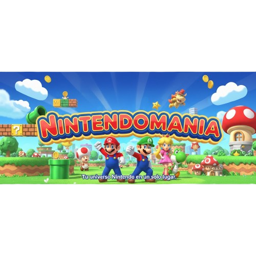

Mario, creado por Shigeru Miyamoto, no es solo el rostro de Nintendo, sino el personaje más reconocido en la historia de los videojuegos.

Hitos Clásicos: La Era de las Plataformas 2D
La base de la saga, donde se establecieron las reglas del plataformeo, los power-ups y el diseño de niveles. Cada juego redefinió el género.
Super Mario Bros. (1985)
La primera gran aventura. Introdujo el scroll lateral y los Power-Ups.
Este título no solo salvó a la industria del videojuego, sino que inventó las reglas modernas de los juegos de plataformas. Introdujo el icónico Super Champiñón, la Flor de Fuego y la idea de secretos ocultos.
Super Mario Bros. 3 (1988)
La gran expansión. Introdujo el mapamundi y el traje de Mapache.
SM3 fue un salto masivo en complejidad, introduciendo el mapamundi (que permitía elegir niveles y guardar el progreso) y una gran variedad de trajes de transformación, siendo el más memorable el traje de Mapache con capacidad de volar.
Super Mario World (1990)
La obra maestra de SNES. Debut de Yoshi y el énfasis en las rutas secretas.
Marcó el debut de Super Nintendo y de Yoshi. Perfeccionó el scroll lateral y se centró en la exploración, ya que gran parte de los niveles requerían encontrar salidas secretas para desbloquear nuevas zonas del mapamundi.
Yoshi's Island (1995)
El inicio de la saga Yoshi. Redefinió el estilo artístico 2D y la mecánica de "montar".
Aunque técnicamente es una secuela, este título centró la jugabilidad en Yoshi (el protector del bebé Mario). Su estilo artístico de crayones fue una ruptura visual y consolidó la mecánica de los huevos de Yoshi.
La Revolución 3D: El Salto Dimensional (1996)
El lanzamiento de Super Mario 64 en 1996 no fue solo el salto gráfico de Mario sino que fue la reinvención del género de plataformas. El juego definió cómo debían funcionar la cámara, el movimiento y la interacción en un espacio tridimensional. Esta sección muestra los títulos que han redefinido esta perspectiva.
Super Mario 64 (1996)
El juego que enseñó a toda la industria cómo diseñar plataformas en tres dimensiones.
El verdadero salto. Introdujo el control analógico de 360 grados y la cámara dinámica (gracias a Cappy, el Lakitu camárografo), elementos que son ahora estándar en cualquier juego 3D.
Super Mario Sunshine (2002)
La aventura tropical. Introdujo la mochila de agua FLUDD como mecánica de propulsión y limpieza.
Marcó una nueva era de experimentación. Aunque conservaba la exploración 3D, añadió la mochila FLUDD para el plataformeo vertical y la resolución de puzles basados en la limpieza y el movimiento acuático.
Super Mario Galaxy (2007)
La física espacial. Plataformeo que utiliza la gravedad de pequeños planetas como mecánica central.
Llevó la física 3D a un nuevo nivel. El diseño de niveles se basó en la gravedad planetaria, obligando al jugador a dominar la inercia y los saltos entre esferas cósmicas.
Super Mario 3D Land (2011)
Diseño portátil. Fue la primera gran aventura 3D diseñada para la perspectiva estereoscópica de 3DS.
Este título fue pionero en llevar la experiencia 3D de mundo abierto (tipo Galaxy) a un formato portátil y basado en niveles cortos. Su diseño de juego combinó el control 3D con la progresión lineal del 2D, estableciendo el formato que más tarde usaría 3D World. Reintrodujo el Traje Tanooki (Mapache).
Super Mario 3D World (2013)
La fusión de mundos. Combinó la jugabilidad lineal 2D con la libertad de movimiento en 3D.
Este título fue un experimento brillante que fusionó la estructura de niveles lineales (2D) con la libertad de movimiento tridimensional. Su gran novedad fue la Super Campana, que permitía a los personajes transformarse en gatos, escalando paredes y atacando con garras. Además, fue el primer juego 3D de Mario con un multijugador cooperativo de cuatro jugadores en pantalla.
Super Mario Odyssey (2017)
El sandbox moderno. Gran exploración en mundos abiertos gracias al compañero Cappy.
Este título se enfocó en la exploración de grandes mundos abiertos. Su gran novedad fue el compañero Cappy, que permite a Mario "capturar" a la mayoría de los enemigos y objetos, adquiriendo sus habilidades de forma temporal.
Análisis de Personajes Clave y su Evolución
Más allá de Mario, el Reino Champiñón está definido por sus habitantes, aliados y antagonistas. Analizamos el rol semántico de los personajes más importantes de la saga.
Mario: El Héroe, el Icono y el Saltador
Mario: Creado por Miyamoto, es el protagonista de la saga y el icono mundial de los videojuegos.
Mario es la cara visible de Nintendo y la encarnación del plataformeo puro. Su diseño se hizo icónico por las limitaciones técnicas (el bigote y la gorra para disimular la falta de detalle facial y de animación del pelo). Su rol es consistentemente el de héroe arquetípico que siempre está dispuesto a saltar a la acción, siendo el punto central de cada innovación jugable desde 1985.
Diferenciación: En los juegos modernos, Mario se caracteriza por ser el personaje con estadísticas equilibradas, dominando el salto y el movimiento estándar.
Luigi: El Hermano Tímido y el Saltador Alto
Luigi: El hermano menor y protagonista de su propia serie de terror cómico.
Luigi debutó en Mario Bros. (1983) como el personaje jugable para el segundo jugador. Semánticamente, es la contracara de Mario: más alto, más delgado y notoriamente más asustadizo. Sus características de jugabilidad siempre se han centrado en un salto más alto pero con un control de movimiento más resbaladizo, requiriendo mayor precisión.
Evolución de Rol: Su rol se expandió significativamente con la saga Luigi's Mansion, donde pasó de ser el hermano menor a un protagonista capaz de salvar a Mario, solidificando su propia identidad.
Bowser: El Villano Esencial
Bowser: La encarnación del caos y el antagonista más constante del videojuego.
Bowser es el antagonista más constante de la historia. Es la encarnación del caos que, paradójicamente, da stabilidad a la saga: su objetivo constante de secuestrar a la Princesa Peach es el motor narrativo que impulsa cada nueva innovación de gameplay de Mario.
Evolución: Aunque su objetivo siempre es el mismo, ha evolucionado de simple enemigo final a un personaje con profundidad, como se ve en juegos de rol y la épica transformación en Bowser Furia en el título de 2021.
Princesa Peach: De Damisela a Soberana
Princesa Peach: La soberana del Reino Champiñón y objetivo principal de Bowser.
La Princesa Peach, la eterna damisela en apuros, ha visto su rol evolucionar drásticamente. Analizamos su poder y la importancia de su soberanía sobre el Reino Champiñón.
Independencia: Títulos como Super Princess Peach y su rol como personaje jugable en Super Mario 3D World y Super Mario Bros. Wonder demuestran su independencia, rompiendo el arquetipo clásico de personaje a rescatar.
Yoshi y Toad: Los Aliados Esenciales
Yoshi y Toad: Representan la lealtad y el apoyo constante en las aventuras de Mario.
Yoshi (introducido en Super Mario World) y Toad representan la lealtad en la saga. Yoshi es el aliado animal clave para la movilidad y el gameplay alternativo (como se ve en su propia saga), mientras que Toad es el ciudadano común y vital para la administración del Reino Champiñón (como se ve en Captain Toad: Treasure Tracker).
Curiosidades y Secretos del Reino Champiñón
El juego que definió una industria está lleno de secretos de desarrollo, decisiones creativas icónicas y lore oculto.
El Origen de Mario y la Regla del Salto
Mario no se llamó Mario al principio sino que era Jumpman y apareció en el juego Donkey Kong de 1981, salvando a su novia, Pauline.
Mario no se llamó Mario al principio; era Jumpman y apareció en el juego Donkey Kong de 1981, donde su trabajo era salvar a su novia, Pauline, de un gorila gigante. En ese momento, no era un fontanero, sino un carpintero.
La mecánica central fue, desde el inicio, el salto. El diseñador, Shigeru Miyamoto, atestigua la razón fundamental detrás de esto:
"Hice la primera plataforma vertical porque quería que los jugadores entendieran que la acción principal era saltar."
— Shigeru Miyamoto, Creador de Mario
¿Por qué tiene Bigote y Gorra?
El icónico diseño de Mario fue una solución a las limitaciones de los gráficos de 8-bits.
El famoso bigote y la gorra no fueron elecciones estéticas al azar. Fueron soluciones directas a las limitaciones del hardware de 8 bits:
Gorra: Era más fácil de animar que el cabello. Si Mario movía el pelo al saltar, la animación requeriría más píxeles, por lo que una gorra solucionó ese problema.
Bigote: El bigote era necesario para que el rostro de Mario fuera visible en la baja resolución de la NES. Era imposible dibujar una boca claramente, por lo que el bigote hacía que la nariz y la expresión fueran más distinguibles.
El Origen de los Goombas y el Lore Oscuro
Los Goombas son los soldados más comunes del ejército Koopa, pero su origen es sorprendente.
Existe un lore más oscuro en torno a los enemigos comunes. Los Goombas no siempre fueron leales a Bowser. Originalmente, eran miembros del Reino Champiñón que se unieron a Bowser. Esto significa que los jugadores, al aplastar a un Goomba, están derrotando a un antiguo súbdito del Reino que traicionó a Peach.
La idea de los power-ups también tiene una base sombría: los bloques que Mario golpea y de donde salen champiñones son, según una teoría no confirmada por Nintendo, los restos de los ciudadanos del Reino transformados por Bowser.